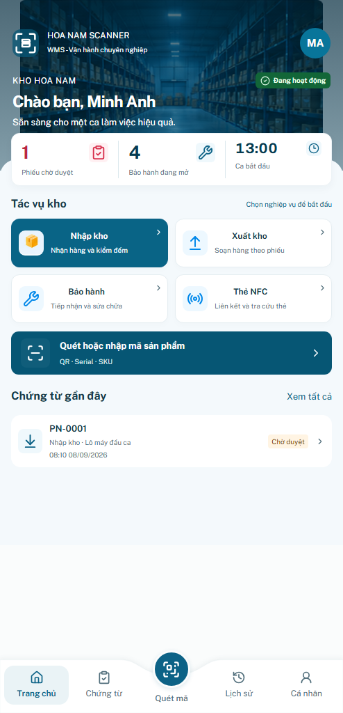

Trang chủ — cập nhật theo ảnh 2.png
Mở app cập nhật · Báo cáo · QA
So trực tiếp ở kích thước vùng app trong reference:494×1024
Reference — ảnh 2Before
After Primary target390×844
Reference — chuẩn hóa về390×844BeforeAfter
360×800 và430×932
Landmarks vùng được sửa —494px
Đo thủ công từ reference phẳng, không phải chứng nhận toàn bộ hình ảnh giống100%. Sai khác dữ liệu, ảnh nền approved và system chrome được loại khỏi khẳng định này.
| Component | Reference x/y/w/h | After x/y/w/h | Δ x/y/w/h |
|---|
| .sh-summary | 19 / 231 / 456 / 99 | 19 / 231.78 / 456 / 99.48 | 0 / 0.78 / 0 / 0.48 |
| .sh-task | 19 / 385 / 222 / 84 | 19 / 385.72 / 221.67 / 83.59 | 0 / 0.72 / -0.33 / -0.41 |
| .sh-lookup | 19 / 574 / 456 / 81 | 19 / 575.69 / 456 / 81.06 | 0 / 1.69 / 0 / 0.06 |
| .sh-record | 19 / 706 / 456 / 67 | 19 / 706.14 / 456 / 67.13 | 0 / 0.14 / 0 / 0.13 |